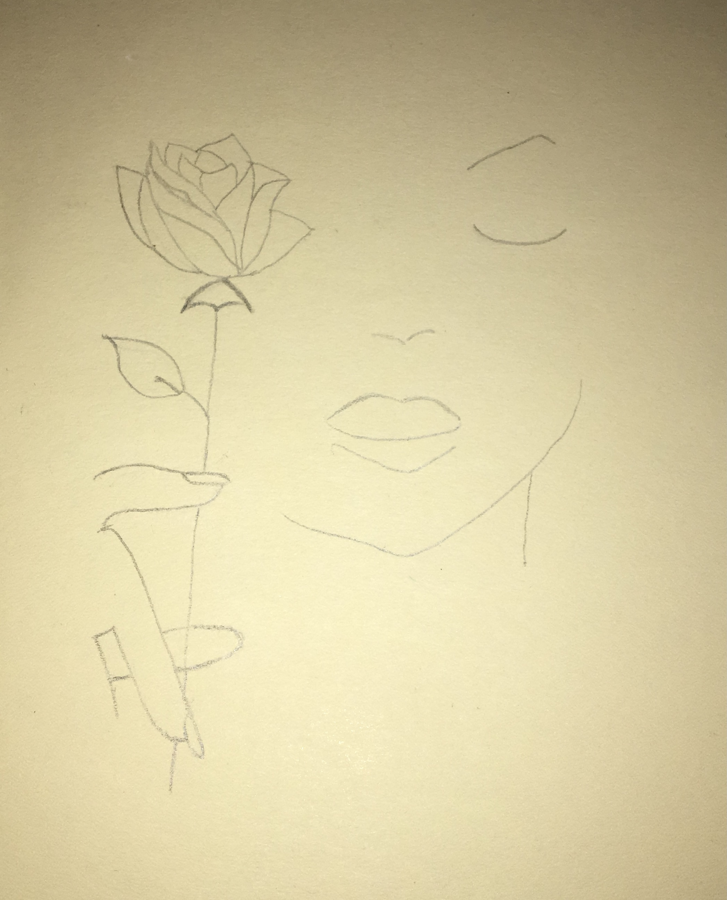
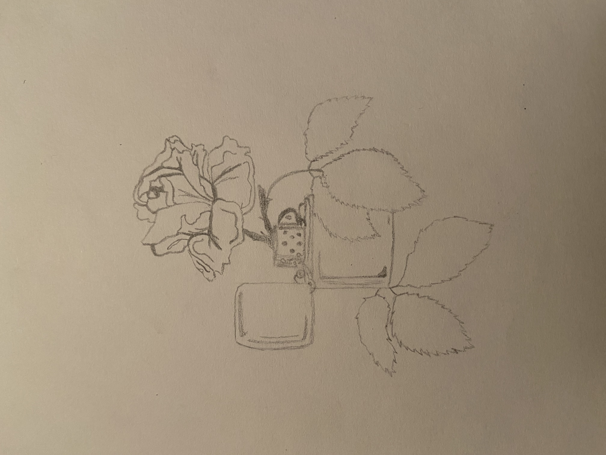
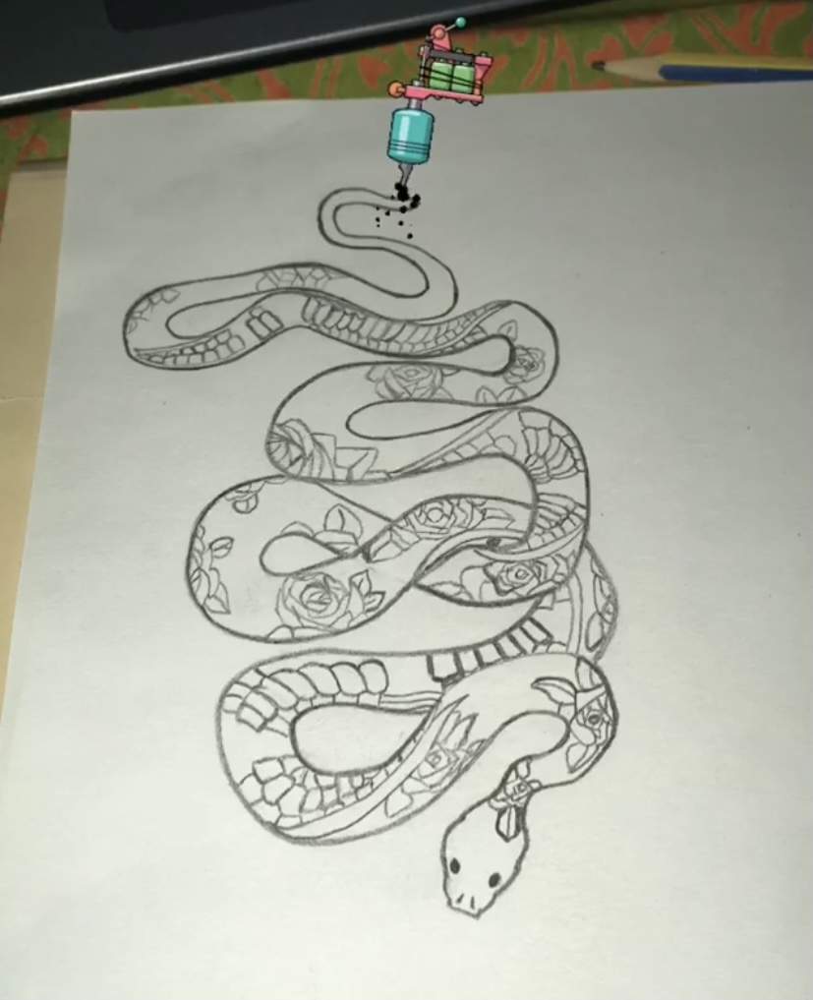
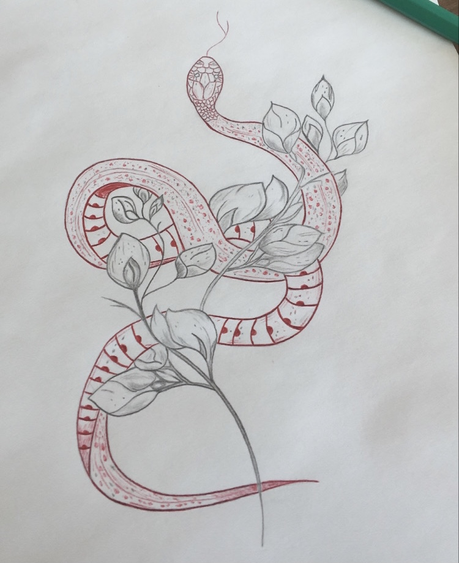

Étudiante en Bachelor in Management spécialisation entrepreneuriat à Audencia Business School.
Je suis une passionée de voyages mais j'aime également le sport comme le surf, la danse ou encore la course à pied. Du côté créatif, j'adore le dessin !
Pendant nos 4 mois de cours, toutes nos matières s'articulent autour d'un même objectif qui est de réaliser notre projet de groupe entrepreneurial :
La création d'une entreprise spécialisée dans la conception d'ailerons de surf en plastique recyclé provenant du littoral. 🏄♀️🌊
- Pour valider notre idée : une étude de marché, une étude qualitative et quantitative via la communication avec les cibles potentielles
- Pour vérifier la viabilité du projet : la création d'un business plan
Année de césure en Angleterre à Bournemouth en 2018-2019 : programme avec des cours d'anglais en école et job étudiant en parallèle (femme de chambre dans un hôtel et serveuse dans une pizzeria).
Une expérience incroyable pleine de rencontres et de découvertes tant sur le plan personnel que professionnel.
Job en Espagne à Barcelone été 2021 : promotrice pour des soirées privées : soirées sur bateaux, soirées sur rooftop, soirées piscine, soirées à thème...
Un job d'été compliqué mais où j'ai pu retrouver la dimension et l'esprit international que j'ai connu en Angleterre.
J'aime bien dessiner des tatouages, voici quelques exemples :
   